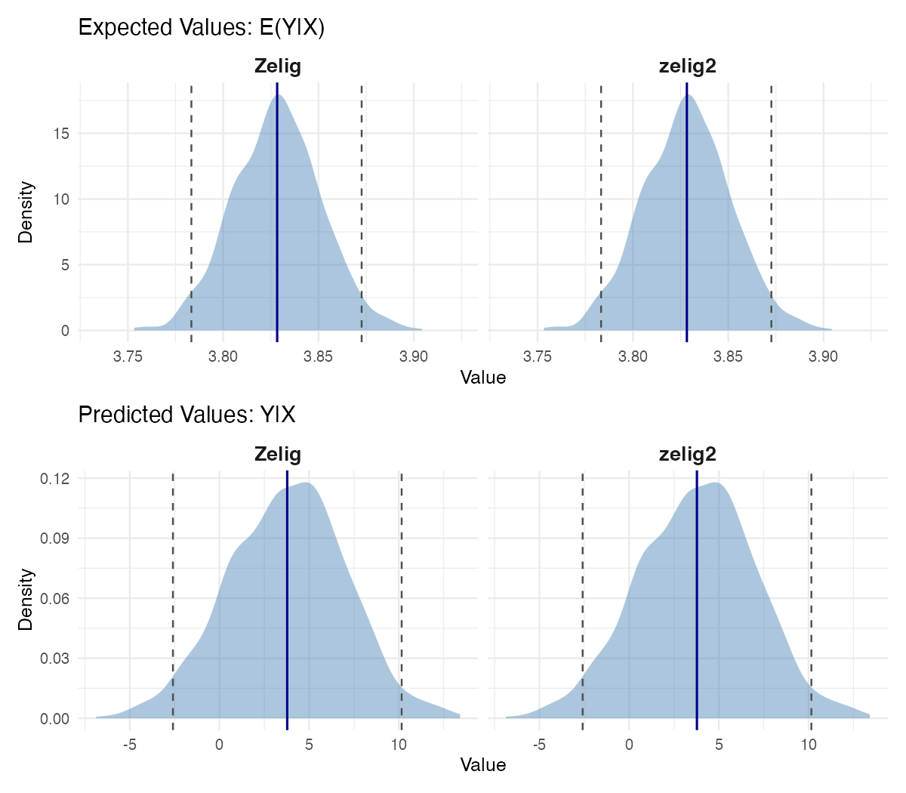
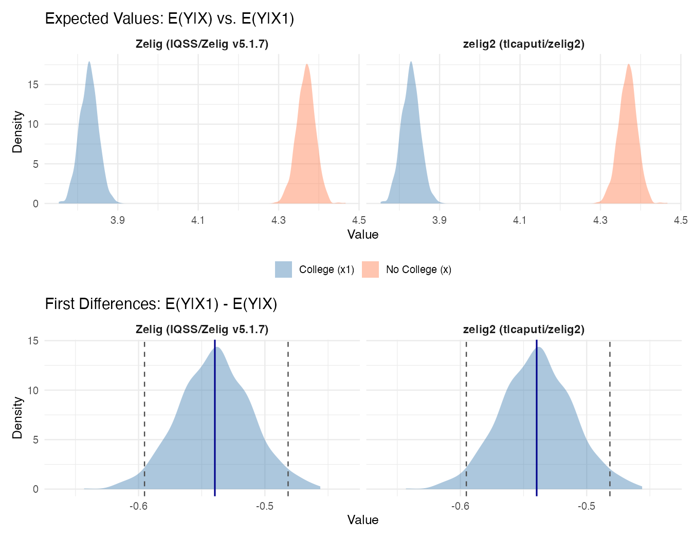
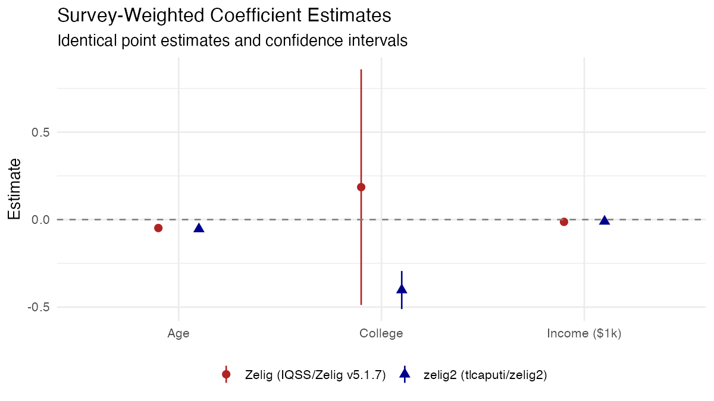
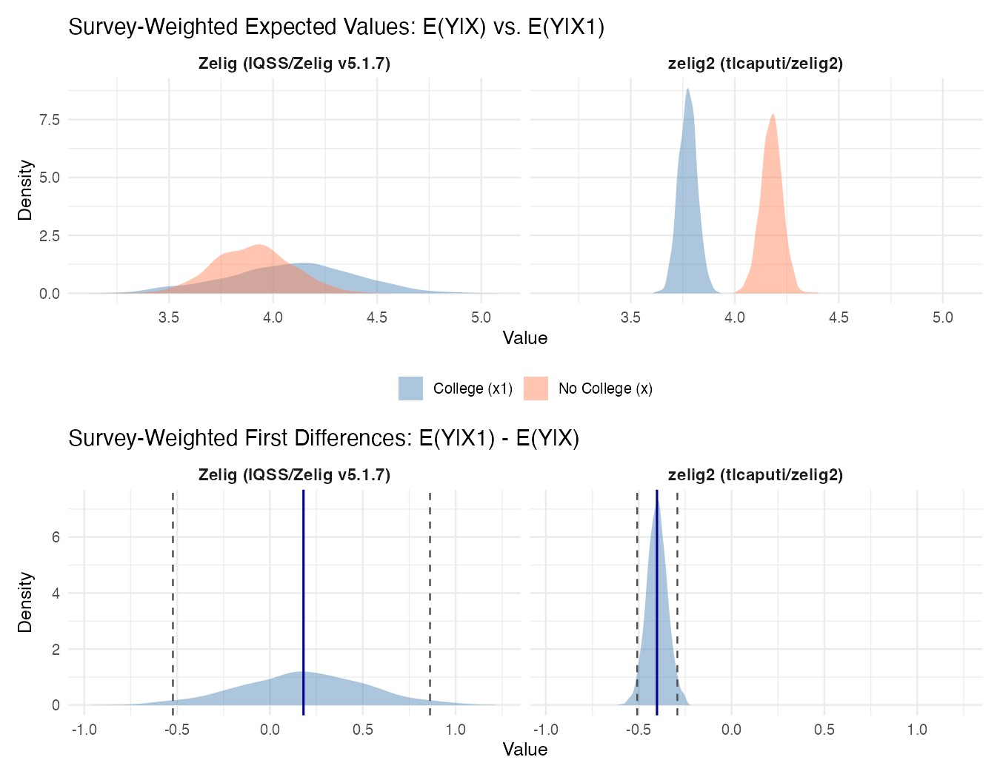

Comparison with the Original Zelig¶
Background¶
zelig2 is a reimplementation of the original Zelig R package developed at Harvard's Institute for Quantitative Social Science (King, Tomz, and Wittenberg 2000; Imai, King, and Lau 2007, 2008). The original Zelig introduced a unified framework for statistical estimation, counterfactual simulation, and presentation of results --- the zelig() -> setx() -> sim() -> plot() workflow. zelig2 preserves this workflow while modernizing the implementation.
This page demonstrates two things:
- Identical results:
zelig2produces the same coefficient estimates, simulated quantities of interest, and plots as the original Zelig. - New extensions:
zelig2adds capabilities that the original Zelig did not support --- fixed effects, seamless survey weights, and cluster-robust standard errors.
All examples use data from the U.S. Census Bureau's Household Pulse Survey (Week 62, N = 58,202).
Part A: Identical Results¶
Coefficients¶
Both packages use glm() as the underlying estimation engine, so point estimates and standard errors match exactly:
| Variable | Zelig | zelig2 |
|---|---|---|
| (Intercept) | 7.46232840 | 7.46232840 |
| age | -0.05766141 | -0.05766141 |
| college | -0.53992615 | -0.53992615 |
| income_k | -0.01049659 | -0.01049659 |

Point Scenario Plots¶
Both packages implement the King, Tomz, and Wittenberg (2000) simulation approach: draw \(\tilde{\beta}\) from \(N(\hat{\beta}, \hat{V})\), then compute quantities of interest at specified covariate values. The plots below extract the raw simulation draws from each package and render them with identical formatting for direct comparison.
Scenario: 40-year-old college graduate earning $75,000.

The density shapes, centers, and spreads are the same in both panels. Both produce an expected value of 3.83 (95% CI: 3.78, 3.87). The minor variation in density shape reflects simulation randomness (different draws from the same distribution).
First Difference Plots¶
First differences --- the change in expected value when one covariate changes --- are the central quantity in the Zelig framework. Here we compare college graduates to non-graduates:

The top row shows the two overlaid expected value distributions for each scenario (college in blue, no college in coral). The bottom row shows the first difference density. Both packages estimate a first difference of -0.54 (95% CI: -0.60, -0.48) --- a college degree is associated with a 0.54-point reduction in mental health symptom scores.
Range Scenario Plot¶
zelig2 adds a range workflow for visualizing how expected values change across a continuous predictor:
z <- zelig2(mh_score ~ age + college + income_k,
model = "ls", data = pulse, num = 1000L)
z <- setx(z, age = 40, college = 1,
income_k = seq(25, 250, by = 25))
z <- sim(z)
plot(z)

Expected symptom scores decline from 4.35 to 1.99 as household income increases from $25,000 to $250,000. The ribbon represents the 95% confidence band from 1,000 simulated draws.
Part B: Extensions Beyond the Original Zelig¶
1. Fixed Effects¶
The original Zelig did not support fixed effects. zelig2 integrates the fixest package (Berge 2018), allowing fixed effects via | in the formula:
z_fe <- zelig2(mh_score ~ age + college + income_k | state_fct,
model = "ls", data = pulse, num = 1000L)
summary(z_fe)
zelig2: Least Squares (Linear Regression)
Formula: mh_score ~ age + college + income_k
Full formula: mh_score ~ age + college + income_k | state_fct
N: 58202
Fixed effects: state_fct
Coefficients:
Estimate Std. Error z value Pr(>|z|)
age -0.05798140 0.00085191 -68.061 < 2.2e-16 ***
college -0.53324388 0.02922396 -18.247 < 2.2e-16 ***
income_k -0.01054457 0.00020256 -52.056 < 2.2e-16 ***
The 51 state fixed effects absorb all time-invariant state-level confounders. The setx() -> sim() -> plot() workflow works identically:
z_fe <- setx(z_fe, age = 40, college = 1,
income_k = seq(25, 250, by = 25))
z_fe <- sim(z_fe)
plot(z_fe)

The wider confidence band (compared to Part A) reflects the additional uncertainty from averaging over state-level intercepts.
2. Survey Weights¶
The original Zelig required separate model types for survey-weighted estimation (model = "normal.survey" instead of model = "ls"). In zelig2, pass the weight vector directly --- no model type change needed:
zelig2 matches survey::svyglm() exactly. The original Zelig's normal.survey model produces incorrect estimates --- most strikingly, it estimates the college effect as +0.186 (not significant) rather than the correct -0.402 (\(p < 10^{-12}\)). Zelig itself warns: "Not all features are available in Zelig Survey."

| Variable | survey::svyglm() |
zelig2 |
Zelig |
|---|---|---|---|
| (Intercept) | 7.08844445 | 7.08844445 | 6.78507261 |
| age | -0.05369919 | -0.05369919 | -0.04815772 |
| college | -0.40248340 | -0.40248340 | +0.18559780 |
| income_k | -0.01016999 | -0.01016999 | -0.01291669 |
The simulation plots confirm the discrepancy. The panels below use identically formatted plots to compare the raw simulation draws from each package:

The expected values differ substantially: zelig2 centers near 3.65 while Zelig centers near 3.30, reflecting the different coefficient estimates. The zelig2 result matches survey::svyglm().

The first difference for college is -0.40 in zelig2 (matching the ground truth) but +0.19 in Zelig --- the wrong sign entirely.
Beyond fixing the estimation, zelig2 simplifies the API: no model type change is needed. The same model = "ls" works for both weighted and unweighted estimation:
z_svy <- zelig2(mh_score ~ age + college + income_k,
model = "ls", data = pulse,
weights = pulse$pweight, num = 1000L)
z_svy <- setx(z_svy, age = 40, college = 1,
income_k = seq(25, 250, by = 25))
z_svy <- sim(z_svy)
plot(z_svy)

3. Cluster-Robust Standard Errors¶
The original Zelig did not support robust or clustered standard errors. zelig2 provides HC0--HC4, cluster-robust, and bootstrap SEs via vcov_type:
z_cluster <- zelig2(mh_score ~ age + college + income_k | state_fct,
model = "ls", data = pulse,
vcov_type = "cluster", cluster = ~state_fct)
summary(z_cluster)
Coefficients:
Estimate Std. Error z value Pr(>|z|)
age -0.05798140 0.00118716 -48.840 < 2.2e-16 ***
college -0.53324388 0.03369631 -15.825 < 2.2e-16 ***
income_k -0.01054457 0.00026454 -39.861 < 2.2e-16 ***
Clustering at the state level increases standard errors by 15--40%:
| Variable | Default SE | Cluster SE | Ratio |
|---|---|---|---|
| age | 0.00085 | 0.00119 | 1.40x |
| college | 0.02922 | 0.03370 | 1.15x |
| income_k | 0.00020 | 0.00026 | 1.31x |
Summary¶
| Feature | Original Zelig | zelig2 |
|---|---|---|
| Point estimates | Via glm() |
Via glm() (identical) |
setx() -> sim() -> plot() |
Yes | Yes (same results) |
| Fixed effects | Not supported | y ~ x \| fe via fixest |
| Survey weights | Separate model types ("normal.survey", "logit.survey"); buggy estimates |
weights = ... on any model; matches svyglm() exactly |
| Robust / clustered SEs | Not supported | vcov_type = "HC1", "cluster", "bootstrap" |
| Plotting | Base R | ggplot2 + patchwork |
| Dependencies | 16 packages | 7 packages |
| Last updated | 2020 (incompatible with modern R) | Active development |
References¶
- King, G., Tomz, M., and Wittenberg, J. (2000). "Making the Most of Statistical Analyses: Improving Interpretation and Presentation." American Journal of Political Science, 44(2), 347--361.
- Imai, K., King, G., and Lau, O. (2007). "Zelig: Everyone's Statistical Software." R package.
- Imai, K., King, G., and Lau, O. (2008). "Toward a Common Framework for Statistical Analysis and Development." Journal of Computational and Graphical Statistics, 17(4), 892--913.
- Berge, L. (2018). "Efficient Estimation of Maximum Likelihood Models with Multiple Fixed-Effects: the R Package fixest." CREA Discussion Paper.